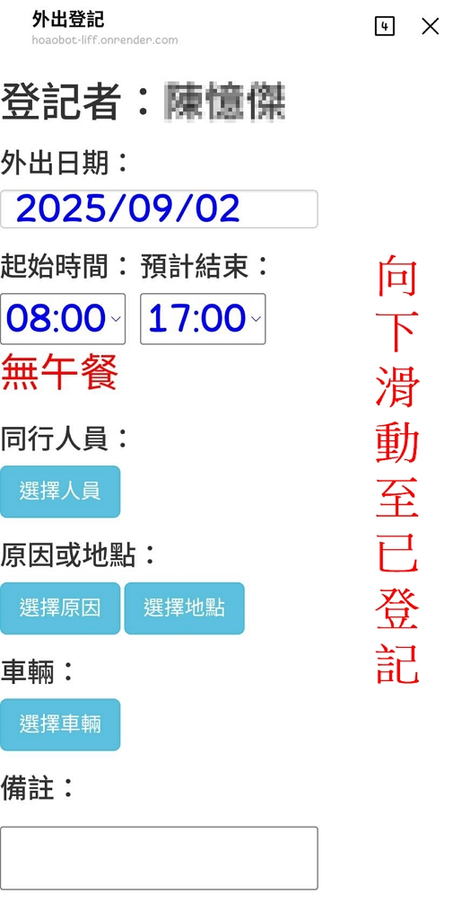
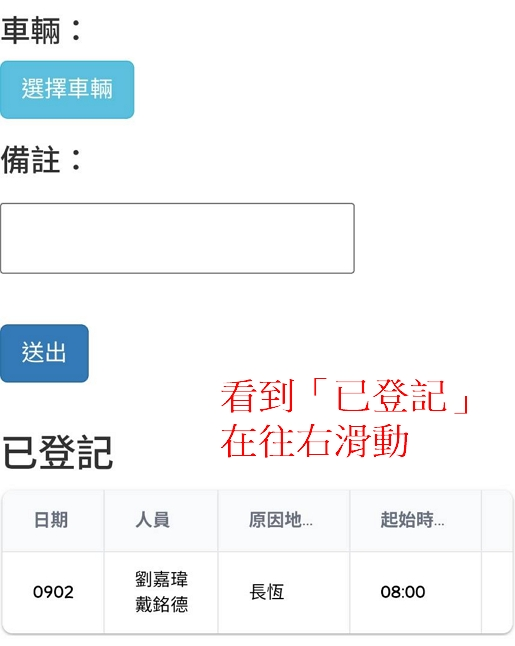
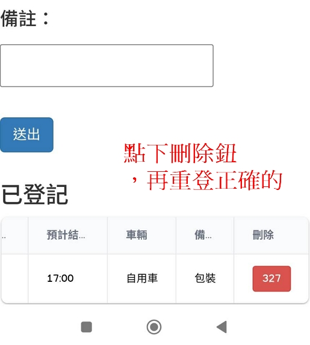

工具集
[小幫手-外出登記]刪除登錯的
Back to Home
[小幫手-外出登記]刪除登錯的
Created
2025-09-02
|
Updated
2025-09-02
|
Post Views:
登錄錯誤不用緊張，刪掉再重登即可，下圖說明如何刪除。
1.向下滑動至「已登記」

2.將「已登記」的表格滑至最右側

3.按下刪除「鈕」，重登正確的資訊

Author:
number25
Link:
https://hoaohoao.github.io/OpenDocument/2025/09/02/20250902-MG-Hepler-goOut-delete/
Copyright Notice:
All articles on this blog are licensed under
CC BY-NC-SA 4.0
unless otherwise stated.
小幫手
外出登記
Previous
[小幫手-訊息]訂閱訊息（Android與電腦版）
說明訂閱小幫手訊息，此篇為安卓手機與Windows用，Apple系統的請看iOS版。 1.點選小幫手「功能表」-「訂閱訊息」 過程中會要求通知的權限，請允許權限便會看到下圖左，即完成；若無法看到「已訂閱…」，請開啟此網站的通知權限，如下圖右。 之後便可以收到小幫手的通知 若直接「點擊通知」，或從小幫手「功能表」-「通知訊息」，可以看到近期收到的所有訊息 若仍無法收到，請檢查手機預設瀏覽器的權限。 2.若習慣從電腦端接收通知，請由以下網址進行訂閱(網址請找程設人員索取)，請接受「允許通知」 之後只要瀏覽器有開啟，便可收到通知。電腦版由於作業系統的限制，通知訊息顯示較不完整。
Next
[小幫手-請假]請假的查詢（個人年度？近日人員？）
說明兩種查詢方式。 1.查詢個人年度紀錄紀錄的最右邊會標出「臨請」或「補登」。 2.查詢近日請假人員左右滑動可看到「今日」、「下一工作日」、「未核」三頁
Related Articles
2025-08-29
[小幫手-請假]請假登錄打錯怎麼辦？
登錄錯誤不用緊張，有兩種處理方式，使用哪種方式取決於打錯多久了。 1.自行處理（打錯半天之內機乎都這樣處理）在登錄完三分鐘後（未被審核之前，可以自行捨棄，參考下圖） 2.找人處理（自己處理不了的）已經審核的，就只能請相關人員用電腦處理了
2025-08-29
[小幫手-請假]補登錄？
兩個月之內的假是可以透過小幫手補登的，再之前的就要請相關人員用電腦處理了。 1.點選補登-進入補登模式 2.在補登模式下，依原本選日期假別送出即可
2025-09-02
[小幫手-請假]請假的查詢（個人年度？近日人員？）
說明兩種查詢方式。 1.查詢個人年度紀錄紀錄的最右邊會標出「臨請」或「補登」。 2.查詢近日請假人員左右滑動可看到「今日」、「下一工作日」、「未核」三頁
2025-09-03
[小幫手-訊息]訂閱訊息（Android與電腦版）
說明訂閱小幫手訊息，此篇為安卓手機與Windows用，Apple系統的請看iOS版。 1.點選小幫手「功能表」-「訂閱訊息」 過程中會要求通知的權限，請允許權限便會看到下圖左，即完成；若無法看到「已訂閱…」，請開啟此網站的通知權限，如下圖右。 之後便可以收到小幫手的通知 若直接「點擊通知」，或從小幫手「功能表」-「通知訊息」，可以看到近期收到的所有訊息 若仍無法收到，請檢查手機預設瀏覽器的權限。 2.若習慣從電腦端接收通知，請由以下網址進行訂閱(網址請找程設人員索取)，請接受「允許通知」 之後只要瀏覽器有開啟，便可收到通知。電腦版由於作業系統的限制，通知訊息顯示較不完整。
number25
Articles
5
Tags
4
Categories
0
Follow Me
Announcement
This is my Blog
Contents
1.
1.向下滑動至「已登記」
2.
2.將「已登記」的表格滑至最右側
3.
3.按下刪除「鈕」，重登正確的資訊
Recent Posts
[小幫手-訊息]訂閱訊息（Android與電腦版）
2025-09-03
[小幫手-外出登記]刪除登錯的
2025-09-02
[小幫手-請假]請假的查詢（個人年度？近日人員？）
2025-09-02
[小幫手-請假]請假登錄打錯怎麼辦？
2025-08-29
[小幫手-請假]補登錄？
2025-08-29